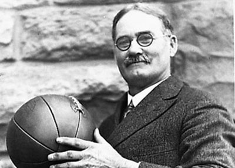
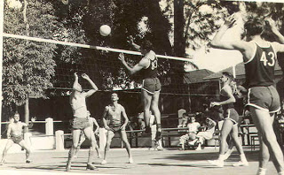
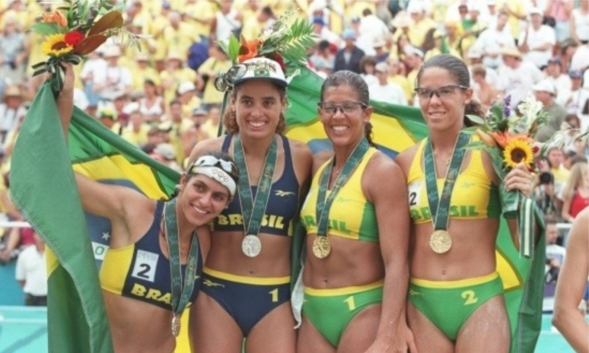

Linha do tempo do voleibol
O voleibol é um esporte com uma rica história que começou no final do século XIX e evoluiu significativamente ao longo do tempo. Abaixo está uma linha do tempo destacando as datas mais importantes na história do voleibol, com links para imagens referentes a essas datas:
1895: Criação do Voleibol
Data: 9 de fevereiro de 1895Evento: O voleibol foi criado por William G. Morgan, um diretor de Educação Física da YMCA em Holyoke, Massachusetts, EUA. Morgan chamou o esporte de "Mintonette". 
1896: Primeira Demonstração Pública
Data: 7 de julho de 1896
Evento: A primeira demonstração pública do novo esporte ocorreu no Springfield College. Durante essa
demonstração, o esporte foi
renomeado para "volleyball".

1947: Fundação da FIVB
Evento: Em Paris, França, representantes de 14 países se reuniram para criar a Fédération Internationale de Volleyball (FIVB). Esta federação foi estabelecida para organizar, regulamentar e promover o voleibol a nível mundial. A criação da FIVB foi crucial para o desenvolvimento e a padronização do esporte em nível internacional.
1949: Primeiro Campeonato Mundial Masculino
Data: 1949
Evento: O primeiro Campeonato Mundial de Voleibol Masculino foi realizado em Praga, Tchecoslováquia. Este
evento marcou o início das competições mundiais de voleibol organizadas pela FIVB. A União Soviética venceu o
torneio, estabelecendo-se como uma das potências do voleibol.
1964: Inclusão nos Jogos Olímpicos
Data: 1964
Evento: O voleibol foi incluído nos Jogos Olímpicos de Tóquio, marcando a estreia do esporte no maior palco
esportivo do mundo. No torneio masculino, a União Soviética conquistou a medalha de ouro, enquanto no feminino,
o Japão levou o ouro. A inclusão nas Olimpíadas ajudou a popularizar o voleibol globalmente.

1993: Criação do Grand Prix de Voleibol
Data: 1993 Evento: Seguindo o sucesso da Liga Mundial, a FIVB criou o Grand Prix de Voleibol, uma competição anual para seleções femininas. Esta competição também ajudou a elevar o nível Mundial do voleibol feminino e a aumentar sua popularidade.
1996: Inclusão do Vôlei de Praia nos Jogos Olímpicos
Data: 1996 Evento: O vôlei de praia foi incluído nos Jogos Olímpicos de Atlanta, dando ao esporte uma nova plataforma para crescer. Desde então, o vôlei de praia tem sido uma das competições mais populares nos Jogos Olímpicos. 
Regras gerais
Aqui estão as principais regras e conceitos do voleibol:
Equipes: O jogo é disputado entre duas equipes, cada uma com seis jogadores. O objetivo é enviar a bola sobre a rede e fazê-la tocar o chão do campo adversário, enquanto a outra equipe tenta evitar isso e mandar a bola de volta.
Quadra: A quadra de voleibol é retangular, dividida ao meio por uma rede. Cada metade possui dimensões de 9 metros de largura por 18 metros de comprimento.
Pontuação: Os pontos são marcados sempre que uma equipe ganha o rally (troca de bola) e a bola toca o chão do campo adversário. A equipe que vence o rally ganha um ponto e o direito de sacar na próxima jogada. O jogo é geralmente disputado em melhor de cinco sets, com cada set indo até 25 pontos (com exceção do último set, que pode ser decidido em 15 pontos), e deve haver uma diferença mínima de dois pontos para vencer o set.
Rotação: As equipes rodam os jogadores no sentido horário após cada ponto marcado. Isso garante que todos os jogadores tenham a oportunidade de jogar em diferentes posições na quadra.
Toques: Cada equipe tem direito a três toques para retornar a bola para o lado adversário. Os toques geralmente consistem em uma recepção, um levantamento e uma cortada, mas podem variar de acordo com a situação.
Saque: O saque é a forma de iniciar o rally. O jogador deve sacar de trás da linha de fundo e acertar a bola sobre a rede para o campo adversário. Se a equipe que saca ganhar o rally, o sacador muda e o time adversário ganha o direito de sacar.
Bloqueio: Os jogadores podem bloquear o ataque adversário, tentando interceptar a bola enquanto ela está sendo enviada sobre a rede. O bloqueio é uma parte importante da defesa no voleibol.
Formações do volei
Formação 4-2: Nesta formação, há quatro jogadores na linha de ataque (dois atacantes de
ponta, um central e um oposto) e dois jogadores na linha de defesa (os levantadores). Os levantadores alternam
entre a linha de frente e a linha de trás conforme a rotação.
Formação 5-1: Nesta formação, há cinco jogadores na linha de ataque (dois atacantes de
ponta, dois centrais e um oposto) e um jogador na linha de defesa (o levantador). O levantador permanece em uma
posição fixa na linha de trás durante toda a rotação.
Formação 6-2: Nesta formação, há seis jogadores, dos quais dois são levantadores. Durante a
rotação, um levantador estará sempre na posição de levantador, enquanto o outro estará na linha de ataque. Isso
permite que a equipe tenha sempre três atacantes na linha de ataque.
video falando um pouco sobre posicionamento e funções do volei
posiconamento voleibol